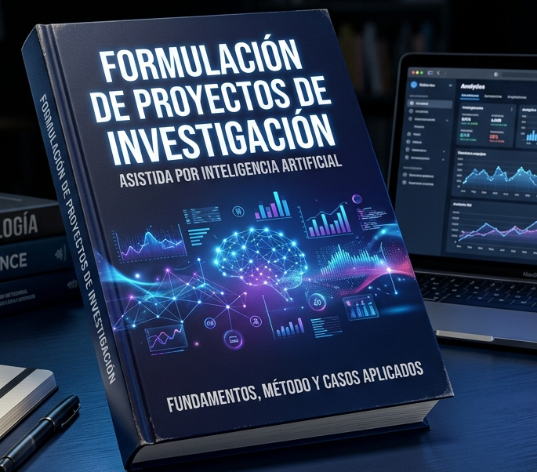

Fundamentos, Método y Casos Aplicados
Transforma tus ideas de investigación en proyectos científicos rigurosos, coherentes y competitivos con el poder de la Inteligencia Artificial. Una metodología práctica que te guía paso a paso desde la identificación del problema hasta la construcción de una propuesta completa, sólida y evaluable.

Lo que aprenderás
Un método probado, verificable y respaldado por fuentes primarias — diseñado para que cualquier investigador pueda formular un proyecto científico sólido, sin improvisaciones.
Asistida por Inteligencia Artificial
¿Por qué investigadores altamente capacitados no siempre logran convertir sus ideas
científicas en proyectos competitivos? La respuesta no está en la falta de conocimiento,
sino en la ausencia de un método para transformar ese conocimiento en una propuesta
estructurada, coherente y evaluable.
Fundamentos, Método y Casos Aplicados
ofrece exactamente eso: un método verificable, iterativo y respaldado en fuentes primarias,
que guía al investigador paso a paso — con o sin asistencia de IA.
Reseñas
Docentes, estudiantes de posgrado e investigadores que ya aplicaron el método.
"Por primera vez entendí la diferencia entre el estado del arte y el marco teórico. El método NOVA me ayudó a encontrar la brecha que no había podido identificar en tres años de maestría."
"Usé el método completo para formular un proyecto de DTI para Minciencias. La verificación de fuentes contra Crossref cambió completamente la calidad de mi marco referencial."
"Como docente de metodología, estaba buscando un texto que integrara IA con rigor epistemológico — sin caer en la trampa de usar IA para inventar fuentes. Este libro lo logra perfectamente."
Empieza hoy
Obtén el libro y accede a un método probado para formular proyectos de investigación científicamente sólidos — con o sin el apoyo de la Plataforma FARO.
Descarga digital · PDF + ePub • Acceso inmediato • Actualizaciones incluidas